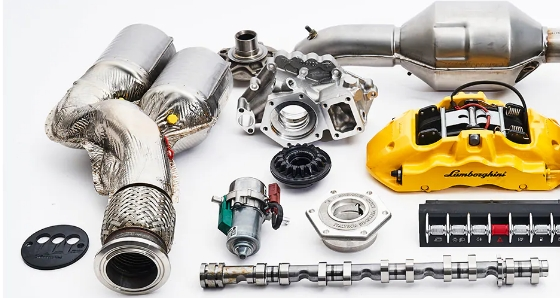
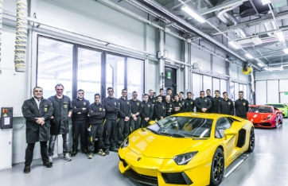

SERVICES
CERTIFIED REPAIRS AND ORIGINAL SPARE PARTS
You can count on Lamborghini’s After Sales service to deliver excellent quality, reliability and performance in any condition thanks to the qualified support of our official Lamborghini network of Dealers and Service Points. Certified technicians guarantee service geared toward maintaining the integrity of your vehicle to ensure impeccable and perfect functionality regardless of age and mileage. If your vehicle requires repair or restoration work, only original spare parts will be used and in accordance with the manufacturer’s specifications in order to ensure the highest standards of quality.
ORIGINAL SPARE PARTS
Our goal has always been to satisfy and exceed the expectations of our customers in terms of quality and service and our spare parts are built and distributed to reflect that goal. Preserving the efficiency of your Lamborghini means preserving the synergy between the elements. The only solution to maintain the superiority and exclusivity of your vehicle intact over time is to use original spare parts. Only components that comply with the specifications of each model can restore the vehicle to its original high comfort and efficiency levels for optimum performance, quality and safety.
TRAINING AND CERTIFICATION
Located in Sant’Agata Bolognese and designed to provide training and refresher courses to After Sales staff, the Lamborghini Training Academy is on a mission to provide the needed skills to achieve Customer Experience excellence and the highest standards of service quality. Training is led by a team of experts who make sure the dealership staff becomes the perfect representation of the Lamborghini spirit. This spirit is all about precision, attention to details and technological evolution. Work on your vehicle will be done by highly specialized and certified professionals – always.
CLASSIC SPARE PARTS

Classic Spare Parts is the service that makes it possible to replace the components of classic Lamborghini vehicles while preserving their authenticity and increasing their value. Use of original spare parts is essential for the preservation, maintenance and restoration of classic models from Sant’Agata Bolognese. The spare parts come from a classic spare parts warehouse or are manufactured on request by the original suppliers. If a specific spare part is not available, it can be faithfully reproduced from the original drawings and technical specifications of the materials used.